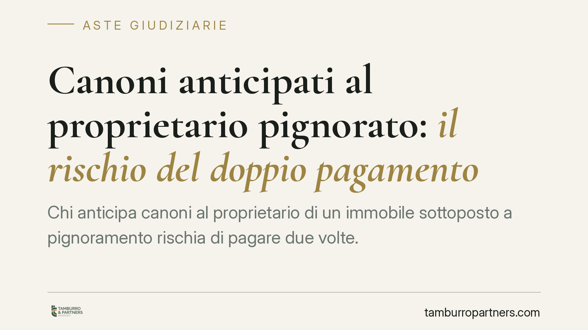

Canoni anticipati al proprietario pignorato: il rischio del doppio pagamento
Chi anticipa canoni al proprietario di un immobile sottoposto a pignoramento rischia di pagare due volte. La disciplina esecutiva limita l'opponibilità delle anticipazioni ai creditori: oltre certe soglie, quanto versato non vale verso la procedura. Un tema che riguarda in particolare l'affitto di fondi rustici e impone prudenza a chi detiene un bene in corso di esecuzione.

Il caso e il principio
L'affittuario di un fondo rustico versa in anticipo più annualità di canone al proprietario. Successivamente l'immobile viene pignorato. Il custode giudiziario e i creditori procedenti pretendono comunque il pagamento dei canoni maturati dopo il vincolo. L'affittuario oppone di aver già pagato: eppure può trovarsi a pagare una seconda volta.
Il nodo è l'opponibilità alla procedura esecutiva di pagamenti e anticipazioni effettuati al debitore esecutato. La giurisprudenza di legittimità, con pronunce della Sezione III della Cassazione, ha più volte ribadito che il vincolo di indisponibilità sul bene produce effetti anche sui rapporti di godimento in corso, nei limiti fissati dal codice civile.
Inquadramento normativo
L'art. 555 c.p.c. individua il momento in cui si perfeziona il pignoramento immobiliare, con la notifica e la successiva trascrizione dell'atto. Da quel momento il bene è sottoposto a vincolo di indisponibilità a favore dei creditori.
Il bene viene affidato a un custode (artt. 559 e 560 c.p.c.), al quale spetta la gestione e, tra l'altro, la riscossione dei frutti e dei canoni che maturano dopo il pignoramento. I pagamenti relativi a tali periodi vanno quindi diretti alla procedura, non più al proprietario esecutato.
Il punto centrale è l'art. 2918 c.c. La norma stabilisce che le cessioni e le liberazioni di pigioni o fitti non ancora scaduti non hanno effetto in pregiudizio dei creditori pignoranti per la parte che eccede il triennio. In altre parole: le anticipazioni di canone sono opponibili alla procedura solo entro il limite dei tre anni; ciò che è stato anticipato oltre tale soglia non vale verso i creditori. L'affittuario che avesse versato anticipazioni ultra-triennali resta, per quella parte, esposto alla pretesa della procedura.
Va tenuta distinta la fattispecie: il principio opera tanto per le pigioni (locazione) quanto per i fitti (affitto), ma il caso tipico riguarda l'affitto di fondo rustico, dove le anticipazioni pluriennali sono prassi più frequente.
Il rapporto con la buona fede
Si potrebbe invocare l'art. 1189 c.c., che libera il debitore che paga in buona fede a chi appare legittimato a ricevere. La disciplina esecutiva, però, prevale: una volta perfezionato e reso conoscibile il vincolo tramite trascrizione, il pagamento al proprietario esecutato non è opponibile ai creditori nei limiti visti sopra. La buona fede del solvens non neutralizza il regime di indisponibilità del bene.
Il risultato pratico è il rischio di doppio pagamento: l'affittuario paga la procedura per i canoni non opponibili e conserva soltanto un diritto di credito verso il proprietario esecutato. Credito che, in un contesto di esecuzione forzata, è spesso di difficile o incerto recupero.
Implicazioni pratiche
Per chi detiene un immobile in affitto o locazione, il messaggio è chiaro: anticipare canoni per periodi lunghi espone a un rischio concreto se il proprietario finisce in esecuzione. Il vantaggio economico dell'anticipazione va ponderato con questa eventualità.
Una volta notizia del pignoramento, i canoni successivi vanno indirizzati al custode. Continuare a pagare il proprietario esecutato significa esporsi a pagare due volte per gli stessi periodi.
Cosa fare in concreto
- Verificare la situazione del bene: prima di stipulare o rinnovare, acquisire una visura catastale e ipotecaria aggiornata per accertare l'assenza di pignoramenti o trascrizioni pregiudizievoli.
- Limitare le anticipazioni: evitare versamenti di canone che coprano periodi superiori al triennio, soglia oltre la quale l'anticipazione non è opponibile ai creditori.
- Formalizzare ogni pagamento: conservare bonifici, quietanze e riferimenti contrattuali che documentino importi e periodi coperti.
- Monitorare il custode: se sopravviene il pignoramento, individuare subito il custode giudiziario e dirigere a lui i canoni successivi al vincolo.
- Esaminare la posizione: in caso di notizia di pignoramento sul bene detenuto, è opportuno un esame tecnico della propria posizione e degli importi già corrisposti.
Conclusioni
L'anticipazione di canone è uno strumento legittimo, ma con limiti precisi quando il bene entra in esecuzione. Conoscere la soglia triennale dell'art. 2918 c.c. e il ruolo del custode consente di evitare l'esborso duplicato. La prudenza, in questi casi, si misura prima della firma e prima del pagamento.
---
*Contributo informativo a cura di Tamburro & Partners - Avv. Giuseppe Tamburro. Non costituisce parere legale.*
Comprare bene all’asta si può.
Se vuoi acquistare un immobile all’asta in sicurezza o difendere un esecutato, scrivi allo studio. Ti rispondiamo entro un giorno lavorativo.